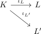
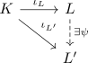

uniqueness up to non-canonical isomorphism of an algebraic closure
Satz
Sei $K$ ein Körper und $L,L'$ algebraische Abschlüsse von $K$. Dann existiert ein i.A. nicht kanonischer Körperisomorphismus
\begin{align*}
\varphi: L \rightarrow L'
\end{align*}
Beweis
Seien

gegeben. Dann existiert nach dem Fortsetzungssatz für Körpererweiterungen ein (nicht kanonischer) ring-homomorphismus $\psi$

Dann ist $\psi(L)$ ein Unterkörper (vgl. Bild eines Körper als Unterkörper) und nach Homomorphiesatz für Ringe iso zu $L/\mathrm{ker}(\psi) = L/0 \cong L$ (vgl. Bild eines Körper als Unterkörper, Körperhomomomorphismus als Monomorphismus) Damit ist $\psi(L)$ algebraisch abgeschlossen und wegen der minimalität (vgl. algebraischer abschluss als minimal algebraisch abgeschlossener Körper) gilt
\begin{align*}
\psi(K) = K'
\end{align*}
Damit ist $\psi$ ein körper-isomorphismus
Alternativ: